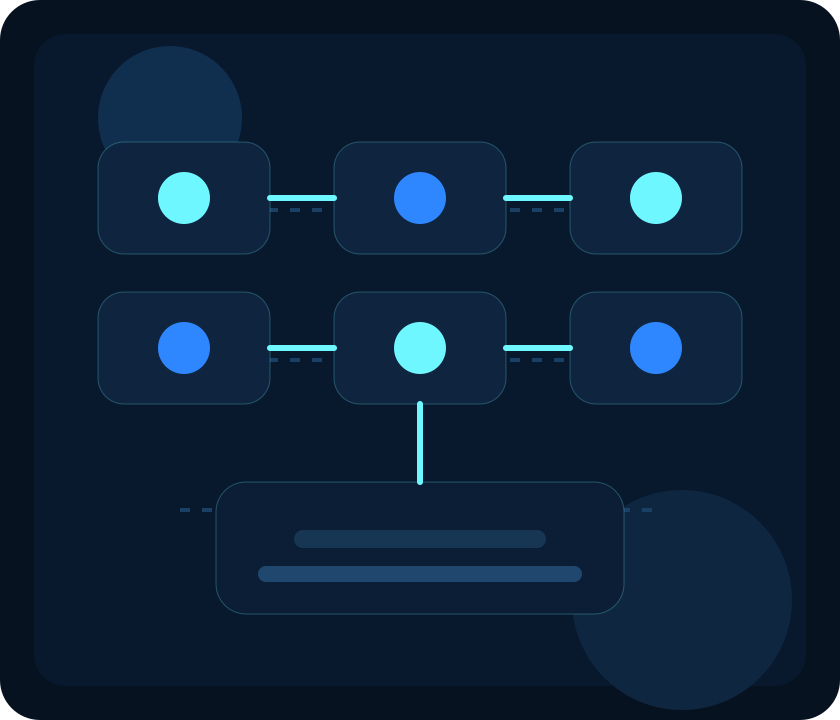

From Input To Intelligent Output
The project follows a clear and easy-to-understand process. It collects user activity, processes it with AI techniques, and then converts it into final reports and focus insights.
Input Capture
Webcam frames, gesture signals, and typing behavior are collected from the user during the session.
Image & Behavior Processing
The collected data is analyzed using computer vision and activity interpretation methods to detect useful patterns.
Emotion & Gesture Recognition
The system identifies emotional state and tracks visible hand or gesture movement to understand user interaction more clearly.
Score Calculation
Signals from multiple modules are combined to generate focus and productivity measurements.
Output & Insights
Reports, summaries, and visual feedback are displayed so the final result becomes easy to interpret.
Input Layer
Camera feed, gesture observation, and keyboard behavior work as the main data sources for the system.
Processing Layer
AI models and computer vision libraries interpret emotion, posture, and action timing from the collected input.
Analysis Layer
Detected signals are compared and scored to understand whether attention is strong, average, or declining.
Output Layer
The final interface presents smart insights, focus score, and session interpretation in a clear academic format.

Simple Flow For Viva Presentation
This visual makes it easier to explain the project in a step-by-step manner without going too deep into technical complexity.